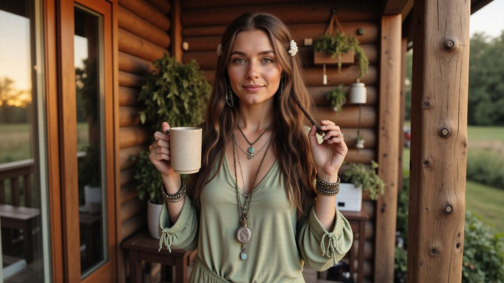
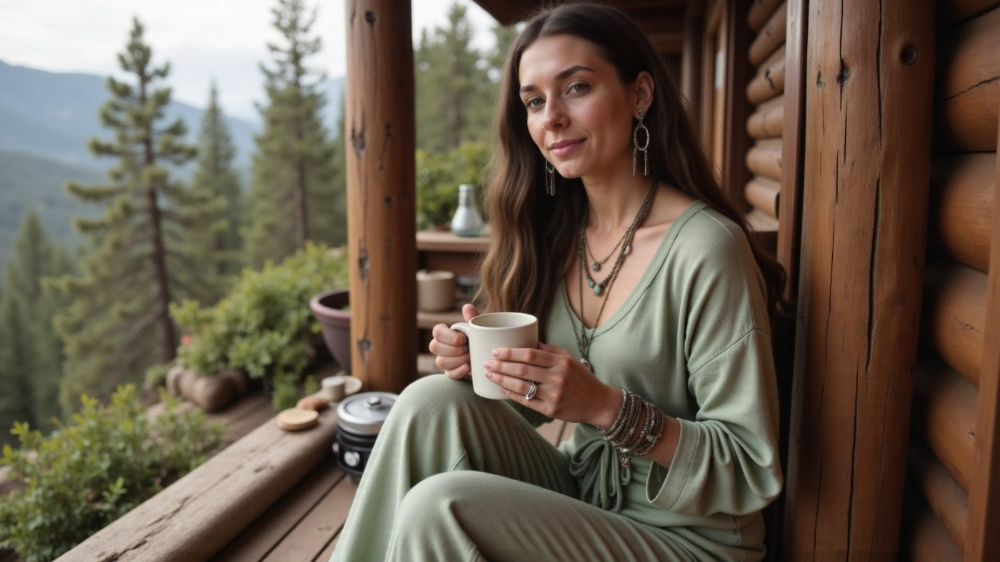
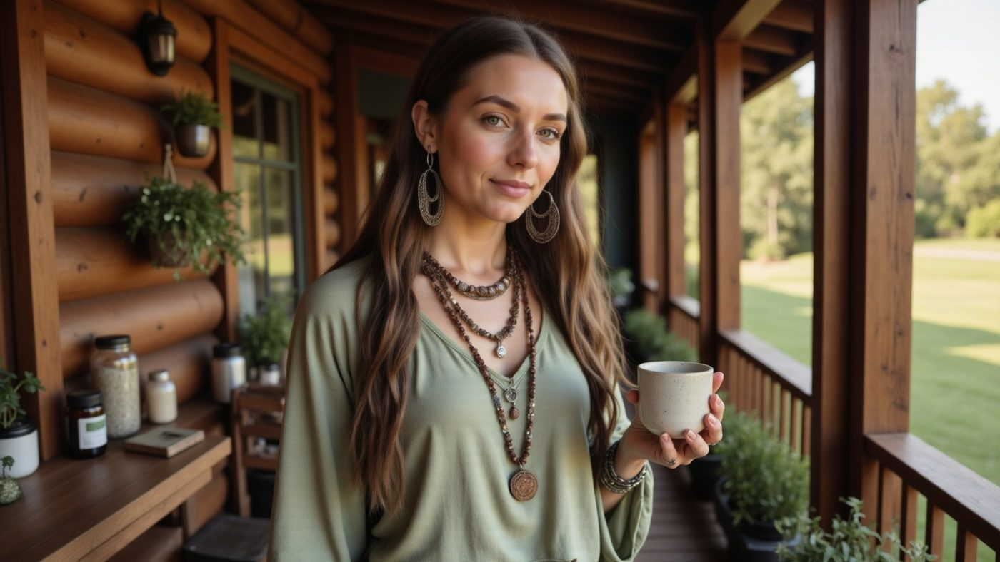

AI-Powered Creative Celesti Tea
Celesti Tea
Everyday Rituals, Elevated Through AI Storytelling

Genre: UGC Campaign · AI Character Development · Lifestyle Brand Content
Tools: ChatGPT · MidJourney · Soundify AI · Kling 2.1 · HeyGen · Suno AI
When Celesti Tea wanted to move beyond glossy product shots, I saw an opening. What if their story was told through a voice that felt human, intimate, and rooted in ritual? Enter Rowan Thorne, an AI lifestyle persona I created as part of my UGC portfolio. With Rowan, we built a campaign that merged the trust of influencer marketing with the control and scalability of AI.
The goal? Show how AI-generated personalities can embody brand rituals in a way that feels authentic, relatable, and scroll-stopping.
THE PROCESS
ChatGPT and prompt engineering helped generate: Immutable persona anchors: Rowan's appearance, wardrobe, and signature setting; Lifestyle scenarios: rustic cabin interiors, natural light, tea steam rising in morning air; Testimonial scripts: first-person, reflective, and emotionally warm.
Creative Elements included: Rowan Thorne: AI UGC persona styled as a grounded, Sierra Nevada creative; Scene Crafting: cozy mornings, natural textures, imperfect handheld framing; UGC Aesthetic: intentional camera shakes, subtle flaws, everyday realism.

I began by writing Rowan's testimonial narrative in ChatGPT, her "daily ritual" with Celesti Tea. The voice was conversational, avoiding ad-speak. From there, I designed prompts in MidJourney and LTX Studio that locked Rowan into consistent styling. Imperfection was key, so I introduced natural shadows, slightly off-center shots, and tactile details that made her look lived-in.
Photoshop and framing adjustments came next, prepping assets for 9:16 social formats. By the end, Rowan wasn't just a visual, she was a repeatable brand voice.

I layered in a Suno-generated zen-like music bed, designed to flow with Rowan's calm testimonial pacing. To complete the atmosphere, I used Soundify AI for subtle nature sound effects, soft wind, distant birdsong, and ambient textures, that grounded the campaign in serenity and ritual.
Making Them Talk
AI visuals alone weren't enough: Rowan needed a voice. I scripted testimonial lines that sounded personal and unscripted, then paired them with voiceover tools and Suno AI soundbeds for ambiance. Every line was calibrated for cadence, warmth, and relatability.
The result? Rowan could "speak" to audiences across TikTok, Instagram Reels, and YouTube Shorts, blending AI photorealism with the conversational rhythm of real UGC creators.
Instead of a faceless ad, viewers got Rowan sharing her morning ritual, her love of Celesti Tea, and why it felt grounding. Believable, approachable, and endlessly reusable.
Bottlenecks and Breakthroughs
Even though Rowan was built to feel authentic, the hardest part was fighting against AI's natural tendency toward perfection. Most models generate images that are too polished: symmetrical faces, flawless lighting, product shots that scream "ad." That doesn't work in UGC, where audiences expect quirks: the slight wobble of a camera, the steam rising unevenly, or the natural shadows of a real kitchen. Early drafts of Rowan looked staged, more like a lifestyle magazine than a relatable morning moment.
The breakthrough came when I engineered imperfections directly into the prompts and framing. I introduced handheld motion, slight lens distortions, and natural light falloff. Rowan suddenly looked like a friend sharing her routine, not an AI render. That balance, between precision and imperfection, unlocked the believability that made the campaign resonate. From there, the system was repeatable: persona anchors stayed fixed, while environments, gestures, and scripts could evolve endlessly.
Why It Works
Celesti Tea's Rowan campaign wasn't about tricking people into thinking she was real, it was about showing how AI-driven storytelling can capture the trust of UGC while maintaining the control brands need.
The result? A proof-of-concept that brands don't have to choose between authenticity and efficiency. They can have both.
In motion
AI persona "Rowan Thorne" built with immutable appearance and setting anchors
UGC-style testimonial videos with scripted voice and Suno AI soundbeds
Deliberately imperfect visuals engineered to read as authentic, not polished
Trust of UGC captured while keeping full creative control
Want this kind of work on your brand?
If your brand should be working harder than it is, this is where it starts. One direct conversation.